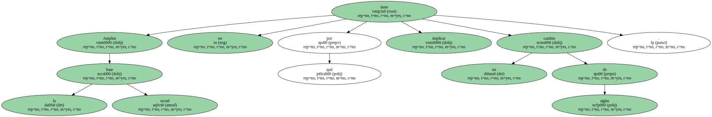

El presidente del PP de Catalunya pone rumbo al centro catalanista afirmando que el noveno congreso del partido, que se celebrará los próximos días 16 y 17 en Barcelona, reforzará la independencia de la formación respecto a la dirección de Madrid.
Con cautela, para no contradecir el discurso de Josep Piqué, defiende un sistema de financiación que otorgue más ingresos a Catalunya.
Ahora que el Gobierno de Aznar no depende de CiU, el congreso del PP catalán definirá un proyecto más autónomo de Madrid.
- - El congreso reforzará la autonomía y la capacidad de decisión del PP de Catalunya.
Se impulsará un ámbito de decisión y una estrategia propia y complementaria con el proyecto del PP en España.
El nuevo escenario refrenda esta línea, porque el PP es decisivo en el Parlament e imprescindible para transmitir las inquietudes y la defensa de los intereses de Catalunya ante el Gobierno de España.
- - ¿No debería incidir más en la acción del Gobierno? -.
No queremos caer en los errores de CiU, por eso el PP no pretende excluir a aquellos que no coincidan con una forma de entender Catalunya ni monopolizar el diálogo.
- - Pero les seguirán tachando de partido sucursalista.
- - Compartir un proyecto político no es supeditar los intereses de Catalunya a los de España.
Aquellos que acusan al PP de actuar de forma sucursalista deberían ser más conscientes de que, en el actual marco, debería producirse una mayor diferenciación entre el escenario catalán y el español.
Es CiU quien ha supeditado la política catalana a la española, primero con el Gobierno del PSOE y luego con el PP.
- - Es justo que la imagen catalanista del PP la concentre Josep Piqué? -.
Piqué es un exponente significativo del protagonismo del PP en el conjunto del Estado y del papel que el partido debe jugar ante la sociedad catalana.
- - ¿Se puede ocupar el espacio de CiU impulsando un catalanismo que no sea nacionalista? -.
CiU ha ocupado en gran parte el espacio central propiciando la confusión entre catalanismo y nacionalismo.
El PP quiere ocupar este mismo espacio impulsando una nueva cultura que sustituya la reivindicación por la corresponsabilidad y la eficacia, que impulse el pluralismo frente al uniformismo y el aperturismo frente al dirigismo.
Queremos un catalanismo integrador que supere el egocentrismo de CiU.
No hay que contraponer catalanismo con un proyecto compartido para España.
- - Según Piqué, la apuesta por el centro catalanista pasa por defender un modelo de financiación que reduzca la aportación de Catalunya.
- - Proponemos una financiación que permita que Catalunya tenga más ingresos.
Es de justicia política y es un objetivo factible.
Por eso, sería bueno que CiU rectificara su propuesta de pacto fiscal para adaptarla a planteamientos más rigurosos.
- - ¿El PP vería reforzada su estrategia con una alianza con una fuerza como Unió al estilo de la UPN en Navarra? -.
Se trabaja con la hipótesis de fortalecer nuestro proyecto, porque al PP catalán no le sobran las siglas.
Ampliar la base social no tiene por qué implicar un cambio de siglas.
- - La implicación de Piqué en el congreso se percibe como un paso cara a su candidatura a la Generalitat.
- - El PP no prevé un adelanto electoral, y por tanto el congreso se enfoca como una oportunidad para relanzar el proyecto huyendo del debate nominalista.
No queremos caer en el error de CiU de centrar el debate en los candidatos.
- - En cualquier caso, Piqué tiene cada vez más protagonismo en la política catalana.
- - Piqué ha elaborado una de las cuatro ponencias del congreso, en el que convergen las diferentes sensibilidades del partido.
Es lógica la aportación de Piqué, como opción de futuro y por su condición de ministro.
- - En el congreso nacional del PP se fichó a Piqué, ¿ahora sería un buen momento para incorporar a Anna Birulés? -.

Birulés ya ha adquirido un compromiso con el PP desde el momento en que forma parte del Gobierno.
A partir de aquí, dar un paso más es una decisión que sólo a ella le corresponde.

- - Se da por sentada su candidatura a la reelección como presidente, por lo que la principal incógnita del congreso está en el número dos.
¿La promoción de las mujeres que alienta Javier Arenas apuntala a Alicia Sánchez Camacho? -.

Un puesto no se cubre por la condición de mujer, y hasta el congreso no se desvelará quién ocupará la secretaría general.
Ahora bien, el PP es el grupo parlamentario con más mujeres.
Tenemos una vicepresidenta del Parlament y una portavoz de grupo y vamos a seguir por esta línea.
Hacemos por convicción lo que los socialistas hacen por la imposición de cuotas.
- - ¿La ronda de conversaciones de Pujol con todas las fuerzas es un rechazo a su petición de un pacto estable? -.
El diálogo institucional es compatible con un diálogo preferente con el PP.
Pero CiU haría bien en no menospreciar al PP catalán, porque para alcanzar acuerdos factibles debe hacerlo con quien tiene responsabilidad de gobierno.
Si CiU se enroca con ERC, ella misma se hará un jaque mate.
Es libre de estrellarse, porque el PP ha dejado claro que un acuerdo entre CiU y ERC es incompatible con un entendimiento con el Gobierno.
- - ¿Qué opina de que CiU pida al Gobierno una reparación a la figura de Companys? -.
No creo en reparaciones históricas.
No hacen más que reabrir controversias del pasado y en la guerra civil se cometieron demasiadas barbaries.

No hay que renunciar a la memoria histórica, pero creo que hay que mirar al futuro y pasar página.